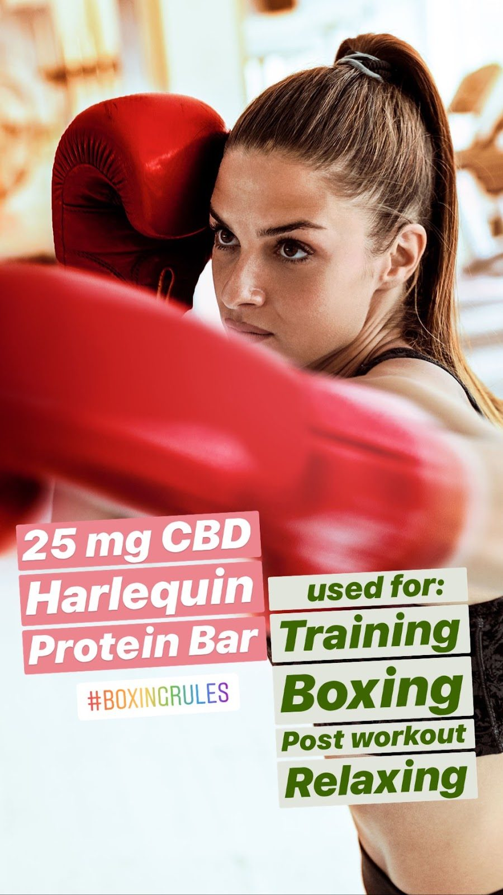
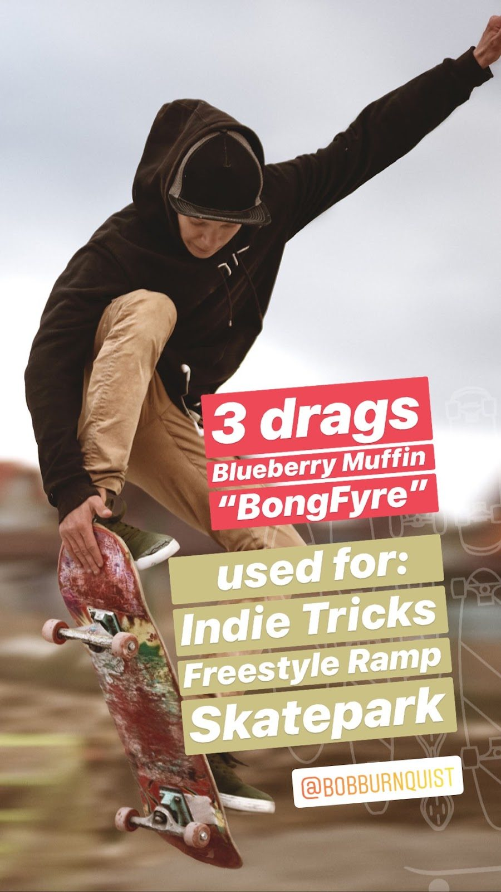
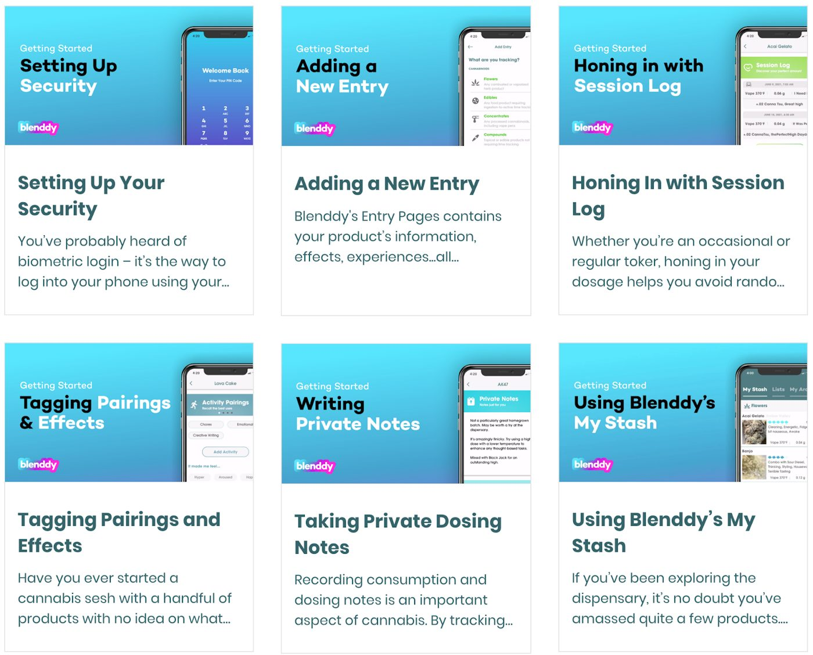
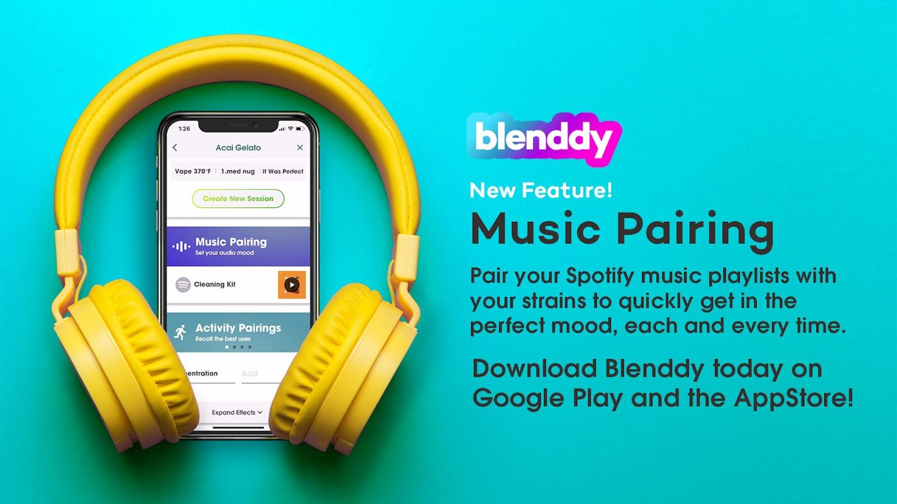

Campaign & Content Blenddy App
Blenddy App
Services
Start-Up Company, Content Creation, Social Media Strategy, Community Engagement, Brand Development, Ad Campaign Management, Analytics Reporting, Audience Growth, Influencer Collaborations, Video Production, SEO Optimization, Shadow-Ban Navigation, Paid Media Strategy, Data-Driven Insights, Copywriting, Graphic Design, Social Media Advertising, and Engagement Analysis.

Cannabis Restrictions
As Head of Social Media for Blenddy, I navigated the complex landscape of marketing within the cannabis industry, where restrictions and shadowbanning presented constant challenges.
Social media platforms impose strict guidelines on cannabis-related content, making it difficult to promote products and engage with audiences effectively.
Despite these hurdles, I developed creative strategies to work within these restrictions, using organic growth techniques, community engagement, and compliant paid media tactics. By carefully crafting content that adhered to platform policies, I was able to grow the brand's presence while avoiding penalties, overcoming the unique challenges posed by the cannabis industry's digital landscape.

Video Campaigns
I tackled the challenges of marketing cannabis-related content, which is often restricted and prone to shadowbanning on major platforms.
To overcome these obstacles, I focused on creating highly engaging video content that could thrive organically. By crafting videos that highlighted the lifestyle and benefits of Blenddy's offerings in a compliant manner, I was able to avoid platform penalties while still reaching our target audience. The content was designed to spark organic engagement, making it shareable and engaging without relying on paid ads, which are often limited in this space. This strategy helped maintain visibility and grow the brand even within a highly regulated environment.
Influencer Marketing
I utilized influencer marketing as a key strategy to bypass platform restrictions and reach a broader audience. Given the limitations on traditional advertising for cannabis-related products, I collaborated with influencers and well-known personalities who aligned with our brand's values. These partnerships allowed us to tap into their established audiences and spread our message in an authentic and organic way. By leveraging the credibility and reach of influencers, we were able to build trust, raise brand awareness, and drive engagement, all while navigating the strict regulations that come with cannabis marketing.


Music Pairing Launch
I played a key role in promoting an exciting new feature in the app that allows users to pair music with their favorite cannabis strains. This innovative feature lets users choose specific music playlists to enhance their experience, whether they're looking to get focused, relax, or vibe to their favorite tunes. By integrating music with strain selection, we created a personalized, immersive experience that resonated with our audience. This unique feature not only differentiated the app in the marketplace but also deepened user engagement by offering a tailored, mood-enhancing experience.
Famous Quotes
I leveraged famous quotes as part of our content strategy to drive organic reach and engagement. With platform restrictions limiting paid promotions for cannabis products, we relied heavily on creating shareable, relatable content that resonated with our audience. By incorporating inspiring and thought-provoking quotes from well-known figures into our social media posts, we fostered higher engagement, sparking conversations and shares. This approach helped increase visibility and build a stronger connection with our audience, allowing us to grow the brand organically in a highly regulated industry.
Using Pop Culture
I strategically tapped into pop culture trends to align our product messaging with what algorithms were favoring and gaining the most views. By integrating timely references, memes, and trending topics, I ensured our content stayed relevant and caught the attention of both users and platform algorithms. This approach helped boost organic reach and engagement, as the algorithms promoted content that connected with current pop culture moments. By staying on top of trends, we were able to create a deeper connection with our audience while increasing visibility for Blenddy's products in a challenging, regulated space.
Creating Unique Content
I developed unique and engaging content that resonated with our audience, leading to a 220% increase in organic engagement. One standout campaign involved pairing astrology signs with cannabis strains, allowing users to explore which strain best suited their personality based on their sign. Additionally, I created a fun and interactive gaming-themed campaign inspired by Mortal Kombat, where different cannabis strains "competed" against each other in a tournament-style bracket. Users got to vote on their favorite strains, advancing them to the next round, which not only boosted engagement but also encouraged active participation from our community.
26% uplift in app signups through influencer partnerships and UGC campaign architecture
Authentic audience growth for a cannabis app in a regulated market
Storytelling campaigns that activated core audience identity and drove sustained organic engagement
Want this kind of work on your brand?
If your brand should be working harder than it is, this is where it starts. One direct conversation.